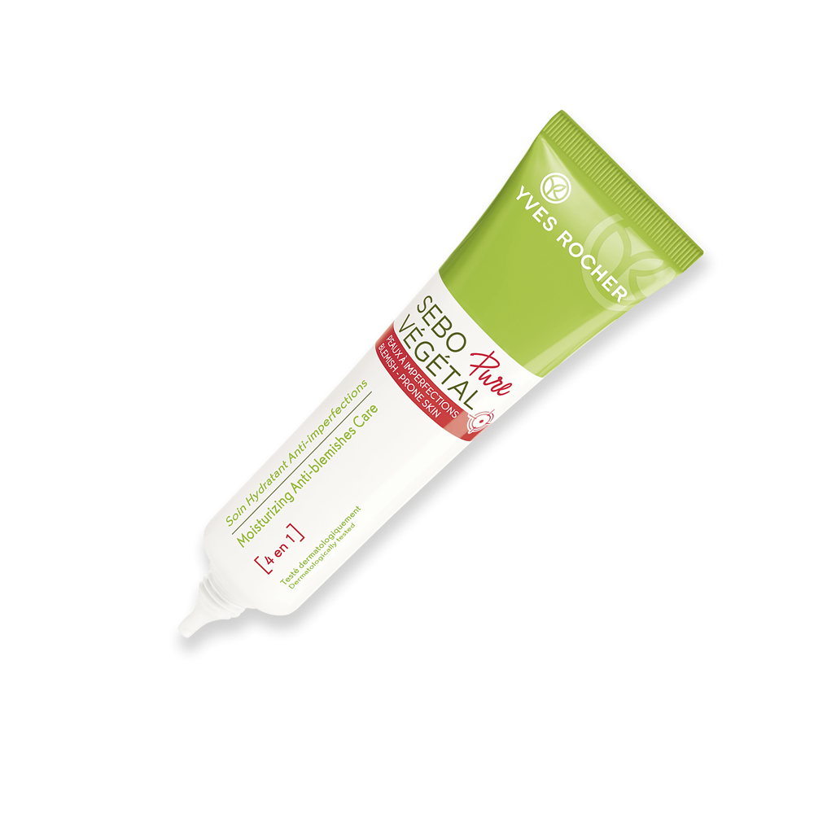

Conoe – Consorzio nazionale di raccolta e trattamento degli oli e dei grassi vegetali ed animali esausti
2021.04.14 23:46

CHI SIAMO Oggetto e finalità CdA NORME Normativa Vigente Circolari CONTRIBUTO AMBIENTALE AZIENDE Aziende per regione Aziende di raccolta e di rigenerazione ASSOCIAZIONI ADESIONE CONTATTI FAQ Cerca Menu Menu Facebook Twitter
Il CONOE è il Consorzio istituito, con la funzione di organizzare, controllare e di monitorare la filiera degli oli e dei grassi vegetali ed animali esausti a fini ambientali, a tutela della salute pubblica e, allo scopo di ridurre la dispersione del rifiuto trasformando un costo ambientale ed economico in una risorsa rinnovabile.
1 2 3 4 5 6 7 8 9 10 11 12 13ECOMONDO 2019 : da dx: On. Sergio Costa, Ministro dell’Ambiente e della Tutela del Territorio e del Mare, dott. Tommaso Campanile, Presidente Conoe
ORARI DI APERTURA:
Sede legale (Roma) e Sede operativa (Milano)
LUN-GIO: 9:00 – 13:00 14:00 – 18:00
VEN: 9:00 – 13:00 14:00 – 17:00
SEGUICI SU:
Link interessanti
Qui ci sono alcuni link interessanti per voi! Godetevi la permanenza :) Scorrere verso l’alto- Consenso al trattamento | Protezione dati personali
- Città di Pescara - Sito Ufficiale del Comune di Pescara ...
- Indire
- Titolare del trattamento | Protezione dati personali
- STA - Società Trattamento Acque, impianti trattamento acque
- Responsabile del trattamento - Altalex
- Soluzioni di compliance per siti web, app e ... - iubenda
- Incaricato del trattamento dei dati - Wikipedia
- Autorizzazioni generali - Garante Privacy
- Coronavirus - Trasmissione, prevenzione e trattamento
- Consenso al trattamento | Protezione dati personali
Ordine Psicologi Calabria. Sito dedicato agli psicologi iscritti all'albo. Guide, news, eventi, corsi di formazione e tutte le informazioni utili.
- Città di Pescara - Sito Ufficiale del Comune di Pescara ...
- Provvedimento recante le prescrizioni relative al trattamento di categorie particolari di dati, ai sensi dell’art. 21, comma 1 del d.lgs. 10 agosto 2018, n. 101 - 5 giugno 2 019 - Provvedimento che individua le prescrizioni contenute nelle Autorizzazioni generali nn. 1/2016, 3/2016, 6/2016, 8/2016 e 9/2016 che risultano compatibili con il Regolamento e con il d.lgs. n. 101/2018 di ...
- Indire
ISDIN si preoccupa della salute della vostra pelle, ha creato una vasta gamma di prodotti e offre consigli e assistenza in modo da poter proteggere e riparare i danni.
- Titolare del trattamento | Protezione dati personali
Il consenso è una delle basi giuridiche del trattamento, nell'ambito del regolamento generale per la protezione dei dati personali.. E' importante tenere presente che il consenso è solo una delle sei basi giuridiche previste dal GDPR, ed è specifico dovere del titolare del trattamento valutare quale tra esse è la base giuridica più idonea per il trattamento che intende porre in essere.
- STA - Società Trattamento Acque, impianti trattamento acque
A partire dai bilanci 2016, le spese di istruttoria sui mutui non sono più considerati oneri accessori su finanziamenti. Per il loro trattamento contabile si vedano I mutui passivi secondo i principi contabili nazionali e Mutui passivi: scritture in partita doppia).
- Responsabile del trattamento - Altalex
Il trattamento di fine servizio (TFS), in Italia è una indennità corrisposta, alla fine del rapporto di lavoro, ai dipendenti pubblici statali assunti prima del 1º gennaio 2001.Per i dipendenti degli enti locali è talvolta detta "indennità di fine servizio".. L'indennità è disciplinata dal Decreto del presidente della Repubblica 29 dicembre 1973, n. 1032.
- Soluzioni di compliance per siti web, app e ... - iubenda
Il CONOE è il Consorzio istituito, con la funzione di organizzare, controllare e di monitorare la filiera degli oli e dei grassi vegetali ed animali esausti a fini ambientali, a tutela della salute pubblica e, allo scopo di ridurre la dispersione del rifiuto trasformando un costo ambientale ed economico in una risorsa rinnovabile.
- Incaricato del trattamento dei dati - Wikipedia
Documenta le attività di trattamento dati all'interno della tua organizzazione. Per adeguarsi alle leggi sulla privacy, in particolare il GDPR, le aziende devono mantenere un registro delle modalità di archiviazione e utilizzo dei dati dei propri utenti.
- Autorizzazioni generali - Garante Privacy
STA - Società Trattamento Acque, impianti trattamento acque civili ed industriali, 20210413
- Coronavirus - Trasmissione, prevenzione e trattamento
Facebook YouTube Instagram Le informazioni contenute in questo sito sono presentate a solo scopo informativo, in nessun caso possono costituire la formulazione di una diagnosi o la prescrizione di un trattamento, e non intendono e non devono in alcun modo sostituire il rapporto diretto medico-paziente o la visita specialistica.
Ordine Psicologi Calabria. Sito dedicato agli psicologi iscritti all'albo. Guide, news, eventi, corsi di formazione e tutte le informazioni utili.
- Provvedimento recante le prescrizioni relative al trattamento di categorie particolari di dati, ai sensi dell’art. 21, comma 1 del d.lgs. 10 agosto 2018, n. 101 - 5 giugno 2 019 - Provvedimento che individua le prescrizioni contenute nelle Autorizzazioni generali nn. 1/2016, 3/2016, 6/2016, 8/2016 e 9/2016 che risultano compatibili con il Regolamento e con il d.lgs. n. 101/2018 di ...
ISDIN si preoccupa della salute della vostra pelle, ha creato una vasta gamma di prodotti e offre consigli e assistenza in modo da poter proteggere e riparare i danni.
Il consenso è una delle basi giuridiche del trattamento, nell'ambito del regolamento generale per la protezione dei dati personali.. E' importante tenere presente che il consenso è solo una delle sei basi giuridiche previste dal GDPR, ed è specifico dovere del titolare del trattamento valutare quale tra esse è la base giuridica più idonea per il trattamento che intende porre in essere.
A partire dai bilanci 2016, le spese di istruttoria sui mutui non sono più considerati oneri accessori su finanziamenti. Per il loro trattamento contabile si vedano I mutui passivi secondo i principi contabili nazionali e Mutui passivi: scritture in partita doppia).
Il trattamento di fine servizio (TFS), in Italia è una indennità corrisposta, alla fine del rapporto di lavoro, ai dipendenti pubblici statali assunti prima del 1º gennaio 2001.Per i dipendenti degli enti locali è talvolta detta "indennità di fine servizio".. L'indennità è disciplinata dal Decreto del presidente della Repubblica 29 dicembre 1973, n. 1032.
Il CONOE è il Consorzio istituito, con la funzione di organizzare, controllare e di monitorare la filiera degli oli e dei grassi vegetali ed animali esausti a fini ambientali, a tutela della salute pubblica e, allo scopo di ridurre la dispersione del rifiuto trasformando un costo ambientale ed economico in una risorsa rinnovabile.
Documenta le attività di trattamento dati all'interno della tua organizzazione. Per adeguarsi alle leggi sulla privacy, in particolare il GDPR, le aziende devono mantenere un registro delle modalità di archiviazione e utilizzo dei dati dei propri utenti.
STA - Società Trattamento Acque, impianti trattamento acque civili ed industriali, 20210413
Facebook YouTube Instagram Le informazioni contenute in questo sito sono presentate a solo scopo informativo, in nessun caso possono costituire la formulazione di una diagnosi o la prescrizione di un trattamento, e non intendono e non devono in alcun modo sostituire il rapporto diretto medico-paziente o la visita specialistica.
